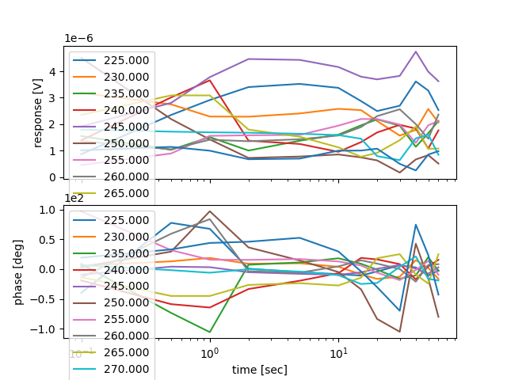

examples¶
The following example program will sweep through a set of frequencies. At each frequency, the program will sample x and y multiple times after changing to its current frequency.
import numpy as np
import time
from setup_control import experiment_wrapper as ew
# Initialize setup
ew.initialize()
# Set the frequency multiplier, as it is particular to the experiment
ew.set_freq_multiplier(18)
# Setup the frequency synthesizer
ew.set_freq_synth_power(15.0)
ew.set_freq_synth_enable(True)
# Setup chopper
ew.set_chopper_amplitude(5.0)
ew.set_chopper_frequency(1.0)
ew.set_chopper_on(True)
# Setup lock-in
ew.set_time_constant(100.0)
ew.set_low_pass_slope(24.0)
# Sleep to allow instruments to adjust settings
time.sleep(4.0)
# Frequencies to test, along with the appropriate sensitivities
freqs_sens = [(225.0, 0.005), (230.0, 0.005), (235.0, 0.002), (240.0, 0.005), (245.0, 0.005), (250.0, 0.002), (255.0, 0.002), (260.0, 0.005), (265.0, 0.002), (270.0, 0.002), (275.0, 0.002)]
# Times to sample at (in seconds)
times = [0.1, 0.5, 1.0, 2.0, 5.0, 10.0, 15.0, 20.0, 30.0, 40.0, 50.0, 60.0]
# Create a new array to save data to (note this first empty row will be deleted later)
data = np.empty((1, len(times) + 1), dtype=float)
# Loop through frequencies
for freq, sens in freqs_sens:
print('Frequency set ' + str(freq) + 'GHz, sensitivity set ' + str(sens) + 'mV')
# Create a new 2-by-1 array for the row data, x is in left col, y is in right col
data_row = np.array((freq, freq))
# Set sensitivity
ew.set_sensitivity(sens)
# Set frequency
ew.set_freq_synth_frequency(freq)
# Get start time in seconds
t_start = time.time()
# Wait, sample, repeat
for t_wait in times:
# Find the time elapsed since the frequency was changed
t_elapse = time.time() - t_start
# Find the time remaining until the next time to sample at occurs
t_left = t_wait - t_elapse
# Sleep until that time
time.sleep(t_left)
# Get data from the lock-in amplifier and and add it to the data array
(x, y) = ew.snap_data()
data_entry = np.array((x, y))
data_row = np.vstack((data_row, data_entry))
# Transpose data_row so that it is actually a row and then add it to the data array
data_row = data_row.transpose()
data = np.vstack((data, data_row))
# Delete the first row in the collected data, as it was created to give the array shape earlier but holds no useful data
data = np.delete(data, 0, 0)
# Close instruments
ew.close()
# Get name of script
script_name = str(__file__)
script_name = script_name[:script_name.find('.py')]
# Save array
np.save(script_name, data)
Although it is not strictly the goal of this library to visualize and analyze data, the following code has been provided to show how the data collected in the previous example might be visualized and analyzed.
import numpy as np
from matplotlib import pyplot as plt
# Load data
data = np.load('lock_in_sample_wait_time.npy')
# Define helper function
def calc_response_phase(x, y):
response = np.sqrt(np.add(np.square(x), np.square(y)))
phase = np.degrees(np.arctan2(y, x))
return response, phase
# Define x-axis
times = [0.1, 0.5, 1.0, 2.0, 5.0, 10.0, 15.0, 20.0, 30.0, 40.0, 50.0, 60.0] # Referred to lock_in_sample_wait_time.py for these values
# Get shape of data
rows, cols = data.shape
# Create plot
fig, axs = plt.subplots(nrows=2, ncols=1, sharex=True)
# Iterate through data two rows at a time
for row in range(0, rows, 2):
# Find row frequency
x_freq = data[row, 0]
y_freq = data[row + 1, 0]
# Only continue to plot if frequencies are equal
if x_freq == y_freq:
# Load data at row
row_label = "{0:.3f}".format(x_freq)
x = data[row, 1:]
y = data[row + 1, 1:]
# Calculate response and phase
response, phase = calc_response_phase(x, y)
# Plot
axs[0].plot(times, response, label=row_label)
axs[1].plot(times, phase, label=row_label)
# Configure plot
axs[0].set_ylabel('response [V]')
axs[1].set_ylabel('phase [deg]')
axs[1].set_xlabel('time [sec]')
axs[0].ticklabel_format(style='sci', scilimits=(0,0), axis='y')
axs[1].ticklabel_format(style='sci', scilimits=(0,0), axis='y')
axs[0].set_xscale('log')
axs[0].legend()
axs[1].legend()
# Show plot
plt.show()
This script will display the plot below when run.
